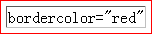
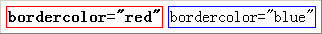
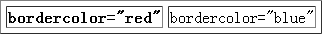

无。
IE Chrome Safari 中 TABLE 元素设置 borderColor 属性将使表格本身与其内单元格的边框颜色均应用上 borderColor 指定的颜色；
Firefox 中该属性则只能作用在表格边框；
Opera 中不支持这个属性。
此问题会导致各浏览器中表格边框样式会有差异。
| 所有浏览器 |
|---|
MSDN 中关于 borderColor 属性的说明请参照：BORDERCOLOR Attribute | borderColor Property。
Safari Reference Library 中关于 borderColor 属性的说明请参照：bordercolor。
分析以下代码：
<table cellspacing="5" bordercolor="red" border="1"> <tr>
<td>bordercolor="red"</td> </tr> </table>
上面代码中包含一个 TABLE 元素，设置了 bordercolor="red" 后，在各浏览器中效果如下：
| IE6 IE7 IE8 Chrome Safari | Firefox | Opera |
|---|---|---|
|  |
可见：
分析以下代码：
<table cellspacing="5" border="1"> <tr> <th
bordercolor="red">bordercolor="red"</th> <td
bordercolor="blue">bordercolor="blue"</td> </tr> </table>
上面代码中 TD、TH 元素设置了 bordercolor 属性。在各浏览器中效果如下：
| IE6 IE7 IE8 | Chrome Safari Firefox Opera |
|---|---|
|  |  |
可见：
在 W3C HTML4 属性表中没有找到 bordercolor 属性，可见这并不是 W3C 规范中的标准属性，各浏览器根据各自的理解实现了该属性的渲染方式，应避免使用这种非标准属性。
若需要设置表格及单元格的边框，应使用 CSS 的 'border' 系列特性。
| 操作系统版本: | Windows 7 Ultimate build 7600 |
|---|---|
| 浏览器版本: |
IE6
IE7 IE8 Firefox 3.6.2 Chrome 5.0.360.0 dev Safari 4.0.5 Opera 10.51 |
| 测试页面: | 无。 |
| 本文更新时间: | 2010-08-09 |
TABLE borderColor 边框 颜色